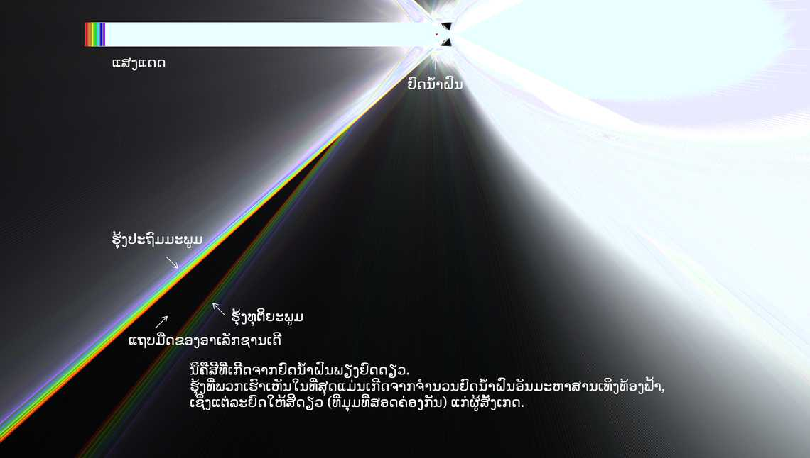

ຜູ້ປະກອບສ່ວນ: Yi-Ting Tu
ແບບຈຳລອງນີ້ສາທິດການເກີດຮຸ້ງປະຖົມມະພູມ, ຮຸ້ງທຸຕິຍະພູມ ແລະ ແຖບມືດຂອງອາເລັກຊານເດີ. ໃນທີ່ນີ້ສະເປັກຕຣຳຂອງແສງແດດຖືກປະມານໂດຍການປະສົມສີແດງ, ສີສົ້ມ, ສີເຫຼືອງ, ສີຂຽວ, ສີຟ້າອ່ອນ, ສີຟ້າ ແລະ ສີມ່ວງ. ລັງສີທີ່ອອກມາສຳລັບຮຸ້ງປະຖົມມະພູມ/ທຸຕິຍະພູມເກີດຈາກການສະທ້ອນພາຍໃນໜຶ່ງ/ສອງຄັ້ງພາຍໃນຢົດນ້ຳຝົນ (ທ່ານສາມາດເຫັນສິ່ງນີ້ໄດ້ໂດຍການຕັ້ງຄ່າ ຄວາມໜາແໜ້ນລັງສີ ໃຫ້ເປັນຕົວເລກຕ່ຳ ແລະ ລາກຢົດນ້ຳຝົນ). ໝາຍເຫດ: ເຫຼົ່ານີ້ບໍ່ແມ່ນການສະທ້ອນກັບໝົດພາຍໃນ, ດັ່ງນັ້ນຄວາມເຂັ້ມຂອງລັງສີທີ່ອອກມາຈຶ່ງຕ່ຳກວ່າລັງສີທີ່ເຂົ້າມາຫຼາຍ. ເນື່ອງຈາກ ມຸມບ່ຽງເບນຕ່ຳສຸດ ຂຶ້ນຢູ່ກັບຄວາມຍາວຄື້ນ, ສີຕ່າງໆຈຶ່ງສະສົມຢູ່ທີ່ມຸມຕ່າງກັນ. ດັ່ງນັ້ນຈຶ່ງເກີດເປັນສີໃນຮຸ້ງກິນນ້ຳ. ເມື່ອອອກຫ່າງຈາກມຸມຕ່ຳສຸດ, ລັງສີຈະບໍ່ສະສົມກັນ, ເຮັດໃຫ້ທຸກສີອ່ອນລົງ ແລະ ປະສົມກັນ, ເກີດເປັນສີຂາວມົວ (ຫຼື "ສີເທົາ") ຢູ່ທີ່ມຸມພາຍນອກຂອງຮຸ້ງທັງສອງ. ໃນທາງກົງກັນຂ້າມ, ບໍ່ມີລັງສີໃດໄປສູ່ມຸມລະຫວ່າງຮຸ້ງທັງສອງ, ເຮັດໃຫ້ເກີດເປັນແຖບມືດຂອງອາເລັກຊານເດີ.
